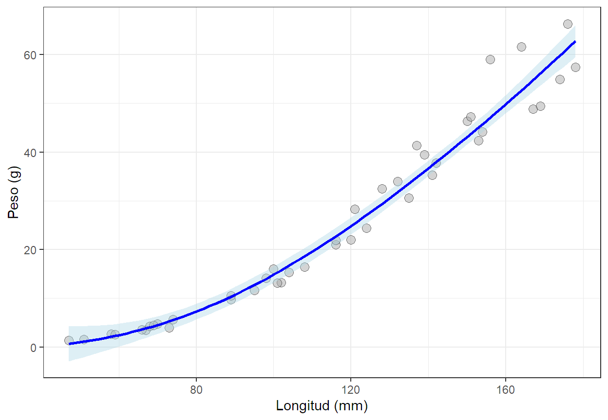
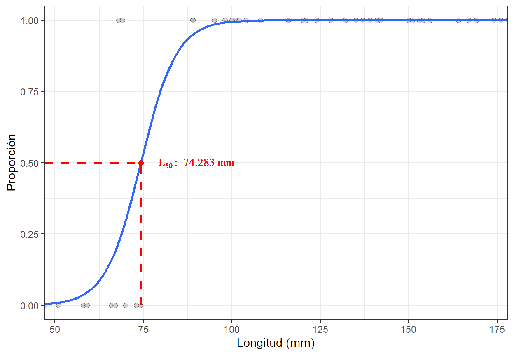

Code
library(readxl)
Datos<-read_excel(file.choose(),sheet = "Hembras")Objetivo de la actividad: Afianzar en los estudiantes las competencias en el análisis y reporte de resultados para analizar la relación entre variables, a través del análisis de regresión con R.
library(readxl)
Datos<-read_excel(file.choose(),sheet = "Hembras")library(ggplot2);library(ggpubr)
ggplot(Datos,aes(x = length,y = weight))+
geom_point(pch=21,col="black",fill="darkgray",
size=3, alpha=0.5)+
geom_smooth(formula = y~x,fill="lightblue",
method = "loess",se=TRUE,col="blue", span=1.5)+
theme_bw()+labs(x="Longitud (mm)", y="Peso (g)")
Se define el modelo según el tipo de tendencia que mejor se ajuste a los datos. Los modelos usado para la relación talla peso son:
| Tendencia | Modelo |
|---|---|
| Líneal | modelo<-lm(weight~length, data = Datos) |
| Exponencial | modelo<-lm(log(weight)~length, data = Datos) |
| Potencia | modelo<-lm(log(weight)~log(length), data = Datos) |
Se selecciona la tendencia que arroje el valor de coeficiente de determinación más alto.
# Calculo de R2 par los diferentes modelos.
modeloL<-lm(formula = weight~length, data = Datos)
modeloE<-lm(formula = log(weight)~length, data = Datos)
modeloP<-modelo<-lm(log(weight)~log(length), data = Datos)
data.frame(Modelo=c("Lineal", "Exponencial", "Potencial"),
R2=c(summary(modeloL)$r.squared, summary(modeloE)$r.squared, summary(modeloP)$r.squared)) Modelo R2
1 Lineal 0.9369192
2 Exponencial 0.9430512
3 Potencial 0.9882413# Normalidad de los residuales.
shapiro.test(modeloP$residuals)
Shapiro-Wilk normality test
data: modeloP$residuals
W = 0.96353, p-value = 0.1865#Homocedasticidad-varianza constante.
library(lmtest)
bptest(modeloP)
studentized Breusch-Pagan test
data: modeloP
BP = 3.5224, df = 1, p-value = 0.06055#Independencia
library(car)
durbinWatsonTest(modeloP,alternative="two.sided") lag Autocorrelation D-W Statistic p-value
1 0.1195781 1.711979 0.34
Alternative hypothesis: rho != 0La función "summary()" nos permitirá observar la tabla de inferencia de los parámetros de nuestro modelo y así contrastar si los betas son diferentes de cero, de manera concreta para nuestro poblema tenemos:
Para \(\beta_0\) - Intercepto.
\(\ H_0:\) La recta pasa por el origen.
\(\ H_1:\) La recta no pasa por el origen.
Para \(\beta_1\) - Pendiente.
\(\ H_0:\) La pendiente es cero, es decir que la longitud no influye sobre el peso.
\(\ H_1:\) La pendiente es diferente de cero, es decir que la longitud influye sobre el peso.
Adicionalmente la función "cor.test()" nos permite evaluar la significancia de la relación entre X e Y, y la función "confit()" permite estimar el valor de cada uno de los parámetros del modelo por intervalos con un 95% de confianza.
summary(modeloP)
Call:
lm(formula = log(weight) ~ log(length), data = Datos)
Residuals:
Min 1Q Median 3Q Max
-0.26189 -0.06015 0.02030 0.06255 0.21058
Coefficients:
Estimate Std. Error t value Pr(>|t|)
(Intercept) -11.04279 0.23652 -46.69 <2e-16 ***
log(length) 2.95795 0.05039 58.70 <2e-16 ***
---
Signif. codes: 0 '***' 0.001 '**' 0.01 '*' 0.05 '.' 0.1 ' ' 1
Residual standard error: 0.1215 on 41 degrees of freedom
Multiple R-squared: 0.9882, Adjusted R-squared: 0.988
F-statistic: 3446 on 1 and 41 DF, p-value: < 2.2e-16with(Datos,cor.test(x =log(length),y=log(weight)))
Pearson's product-moment correlation
data: log(length) and log(weight)
t = 58.701, df = 41, p-value < 2.2e-16
alternative hypothesis: true correlation is not equal to 0
95 percent confidence interval:
0.9890683 0.9968229
sample estimates:
cor
0.9941033 exp(confint(modeloP))[1,];confint(modeloP)[2,] 2.5 % 97.5 %
9.925000e-06 2.580039e-05 2.5 % 97.5 %
2.856186 3.059717 La prueba de hipotesis sobre la pendiente \(\beta_1\) para inferir el tipo de crecimiento, isométrico, alométrico positivo ó alométrico negativo, se realiza teniendo en cuenta la tendencia ajusta.
| Tendencia | Hipótesis de contrastes |
|---|---|
| Líneal | \(H_0:\beta_1=1\) \(H_1:\beta_1≠1\) |
| Exponencial | \(H_0:\beta_1=1\) \(H_1:\beta_1≠1\) |
| Potencia | \(H_0:\beta_1=3\) \(H_1:\beta_1≠3\) |
Si no se rechaza la \(H_0\) el crecimiento es isométrico, es decir su peso incrementa proporcional a su longitud; de los contrario el crecimiento es alométrico. Será alométrico positivo si el estadístico de prueba es positivo, es decir que su peso incrementa en mayor proporción con respecto a su longitud, negativo en otro caso. El estadístico de prueba se calcula,
\[ t=\frac{\beta_1-\theta}{Std.Error_{\beta_1}}\ \] :::
t<-(summary(modeloP)$coef[2,1]-3)/summary(modeloP)$coef[2,2]
t[1] -0.8344508pvalue<-pt(q = t,df = 41,lower.tail = TRUE)*2
pvalue[1] 0.4088628Los datos de la madurez sexual en las ciencias pesqueras generalmente se análiza a través de una regresión logística. Una regresión logística es una técnica que se realiza para relacionar una variable de respuesta binomial con una ó más variables explicativas, donde se modela las probabilidades logarítmicas en función de una variable explicativa (\(x\)) con:
\[ log(\frac{p}{1-p})=\alpha+\beta_1*x \]
En este sentido la probabilidad de que un pez este maduro dado los valores observados de la variable explicativa (\(x\)) se puede obtener mediante la siguiente ecuación:
\[ p=\frac{e^{\alpha+\beta_1x}}{1+ e^{\alpha+\beta_1} } \]
y la longitud a la que el 50% de los peces están maduros (\(L_{50}\)) mediante,
\[ L_{50}=-\frac{\alpha}{\beta_1} \]
m_logit<-glm(formula = maturity~length,family =binomial ,data = Datos)
L50<-(-summary(m_logit)$coef[1,1]/summary(m_logit)$coef[2,1])
L50[1] 74.28257library(ggplot2)
ggplot(Datos,aes(x = length,y = maturity))+
geom_point(pch=21,col="black",fill="darkgray",
size=2, alpha=0.5)+
geom_smooth(formula = y ~ x,method = "glm",se=FALSE,
method.args=list(family="binomial"))+
theme_bw()+labs(x="Longitud (mm)", y="Proporción")+
geom_segment(aes(x = L50, xend = L50,
y = 0, yend = 0.5),
color ="red", size =1, linetype = "dashed")+
geom_segment(aes(x = min(length), xend = L50,
y = 0.5, yend = 0.5), color ="red",
size =1, linetype = "dashed")+
geom_point(x=L50,y=0.5,pch=20,col="red",size=3)+
scale_x_continuous(expand=c(0,0))+
geom_text(x = 90, y = 0.5,
label = expression(L[50]:~74.283~"mm"),
col="red", size=3.5, family="serif")